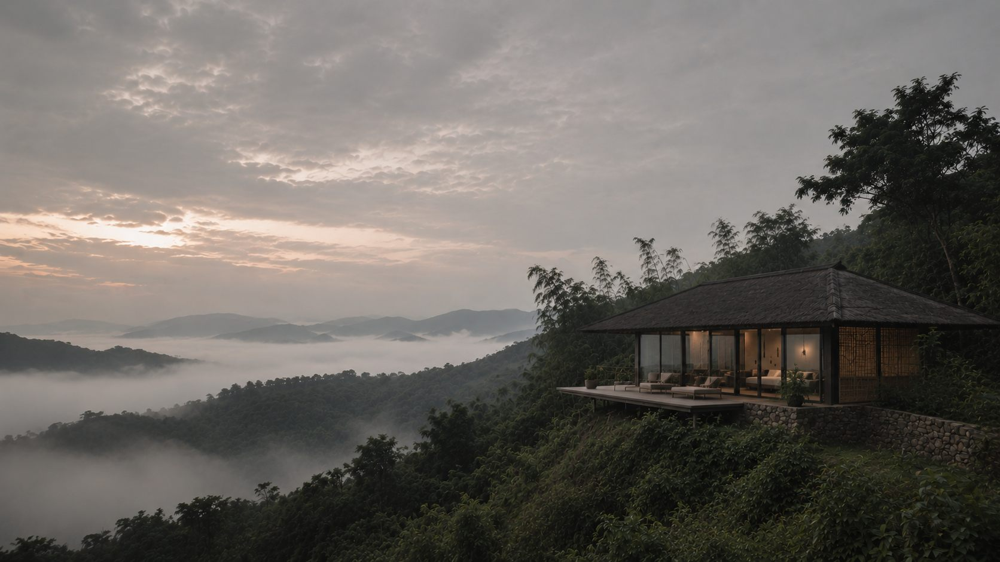
Menginap
menurut adat.
Delapan paviliun di kaki Pegunungan Kendeng, Banten.
Yang terdengar hutan, dan sesekali alu dari arah dapur. Kaki Kendeng
Jauh dari jalan besar
Delapan paviliun berdiri di lereng yang menghadap timur. Tidak ada televisi di dalam kamar, dan tidak ada musik di jalan setapak.
Rumahnya dibangun menurut aturan yang sudah lama berlaku di sini. Bahan diambil dari dekat, atap dipasang tanpa paku, arah bangunan ditentukan oleh matahari pagi.
Dua puluh menit
berjalan kaki
Kendaraan berhenti di ujung kampung. Sisanya jalan setapak, menanjak pelan melewati kebun dan rumpun bambu. Tas dibawakan, langkah tidak.
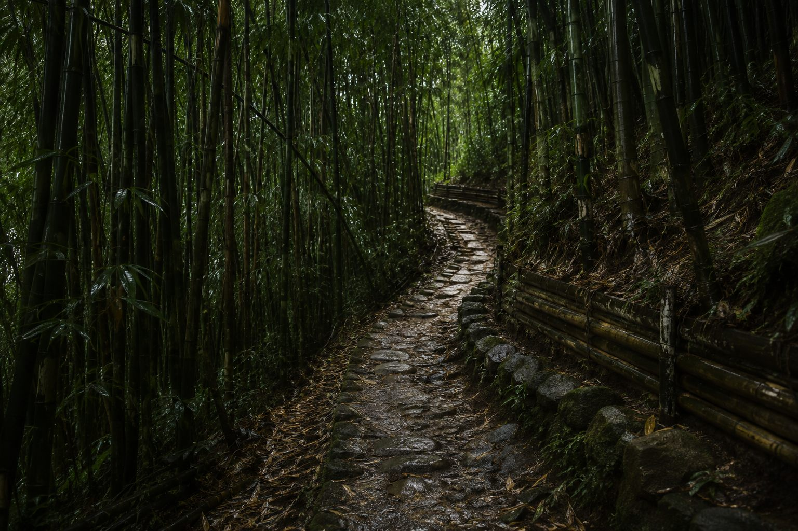
Lima bahan,
semuanya dari dekat
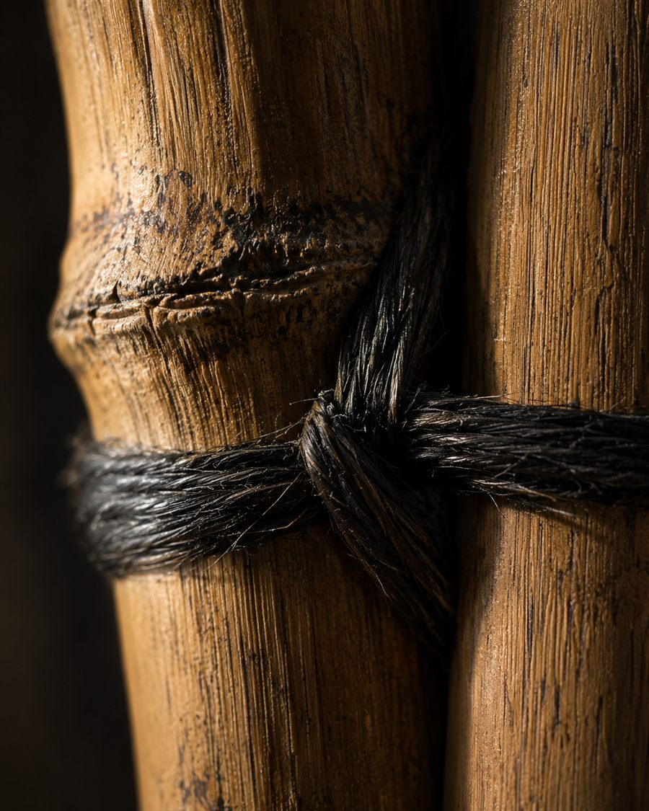
Bambu
Ditebang saat bulan tua supaya tidak dimakan kumbang. Dibelah, direndam, lalu dianyam di tempat.
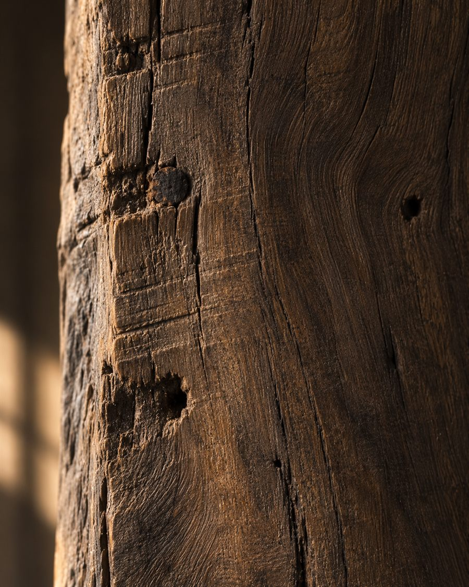
Kayu jati bekas
Diambil dari rumah lama yang dibongkar. Lubang paku dan bekas gergajinya dibiarkan terlihat.
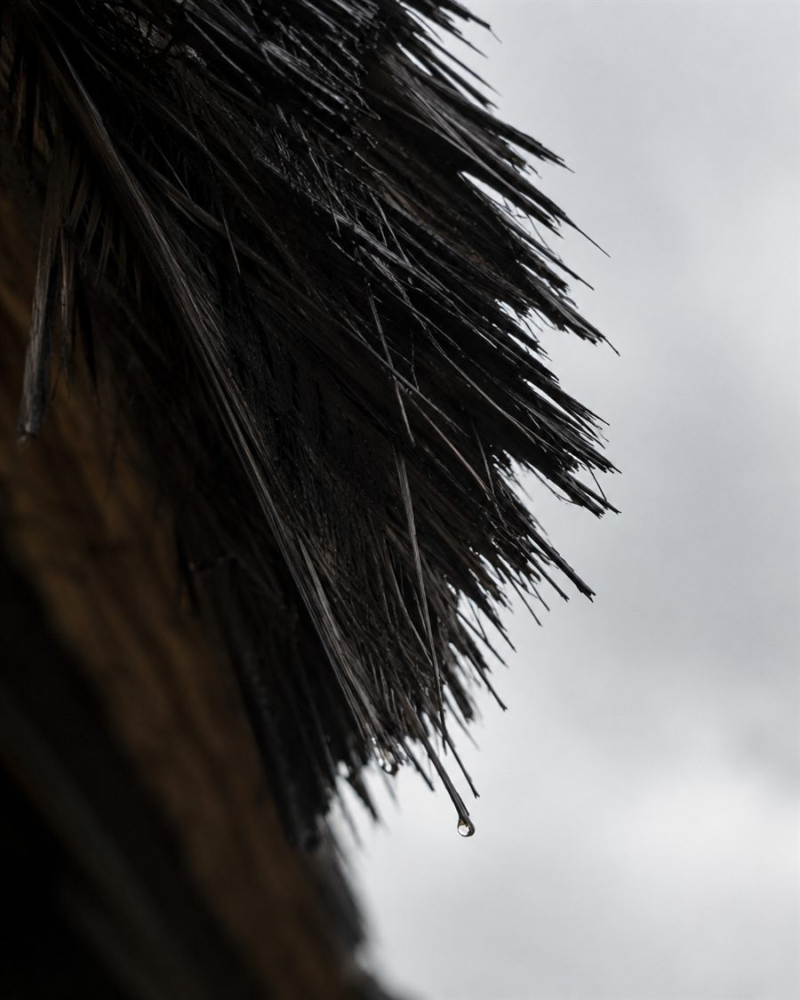
Atap ijuk
Serat aren, dipasang berlapis-lapis. Menahan panas, dan mengubah hujan jadi suara yang rata.
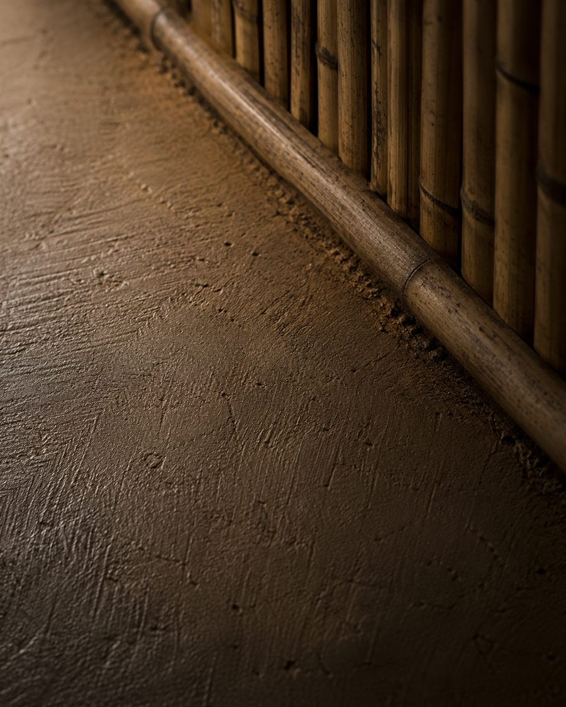
Lantai tanah padat
Tanah setempat ditumbuk sampai keras, disapu tiap pagi. Dingin di telapak kaki sepanjang hari.
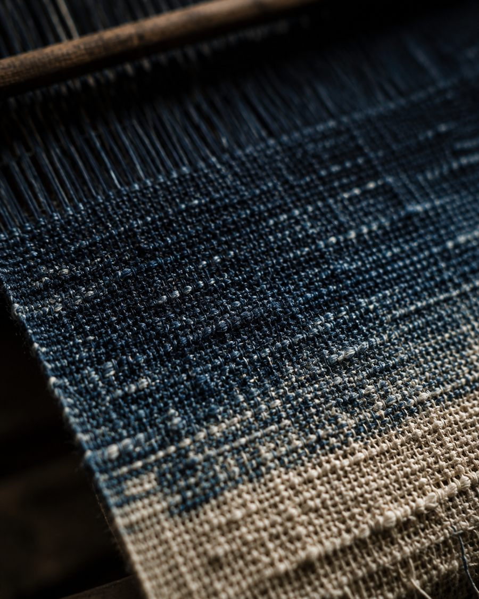
Tenun nila
Diwarnai daun tarum. Warnanya turun sedikit tiap tahun, dan memang begitu seharusnya.
Masing-masing menghadap
arah yang berbeda
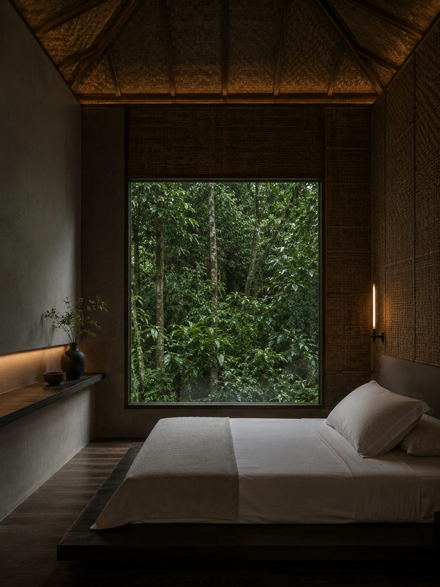
Dinding anyaman bambu di keempat sisi. Yang terdengar dari dalam: daun jatuh di atap, sepanjang malam.
Mulai Rp 2.400.000 / malam
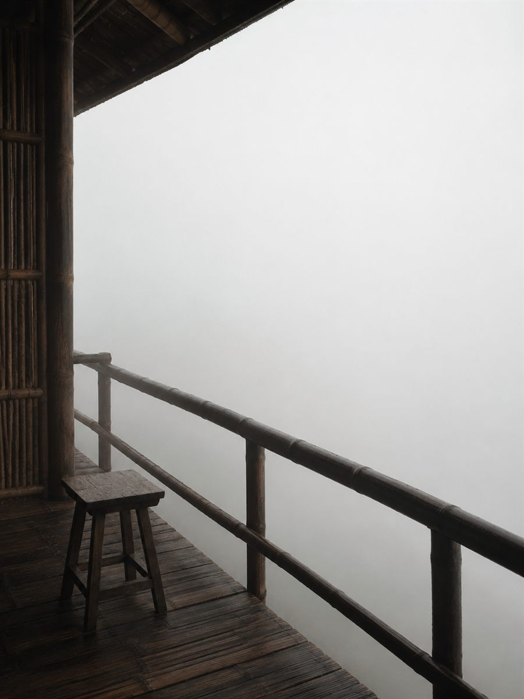
Berdiri paling tinggi. Sampai pukul sembilan pagi, yang terlihat dari terasnya cuma putih.
Mulai Rp 3.200.000 / malam
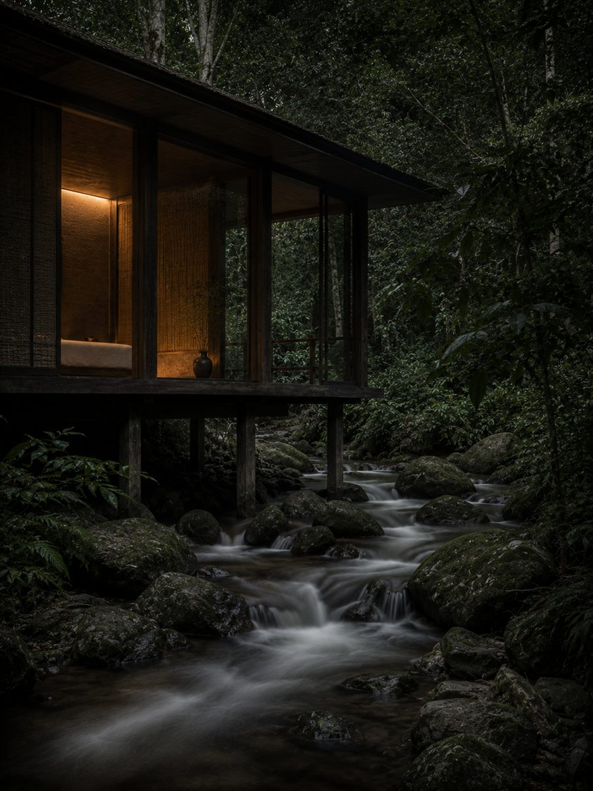
Dibangun di atas tiang, sejengkal di atas air. Suara sungainya tidak pernah berhenti, dan orang cepat terbiasa.
Mulai Rp 2.800.000 / malam
Tidak ada yang
perlu dikerjakan
Tidak ada jadwal yang ditempel di pintu, tidak ada kegiatan yang harus diikuti. Sebagian tamu berjalan sampai sungai, sebagian lagi tidak turun sama sekali dari terasnya.
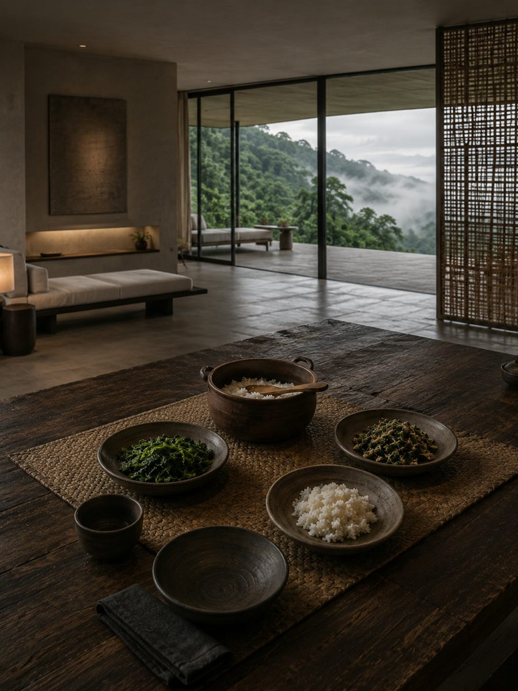
Satu meja,
dua kali sehari
Yang dimasak menyesuaikan apa yang matang di kebun pagi itu. Tidak ada daftar menu, dan tidak ada yang perlu dipilih.
Santapan

Belajar dari
yang mengerjakan
Menenun, menganyam bambu, mewarnai kain dengan tarum. Diajarkan oleh orang yang memang mengerjakannya tiap hari.
Pengalaman
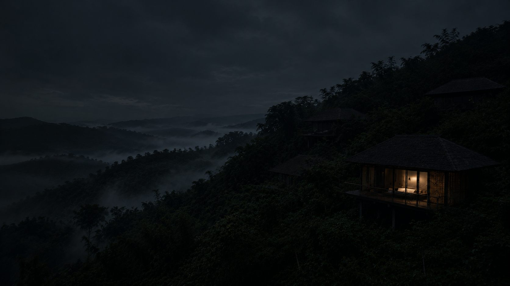
Delapan paviliun,
sepanjang tahun
Menginap paling singkat dua malam. Pemesanan dibalas dalam satu hari.